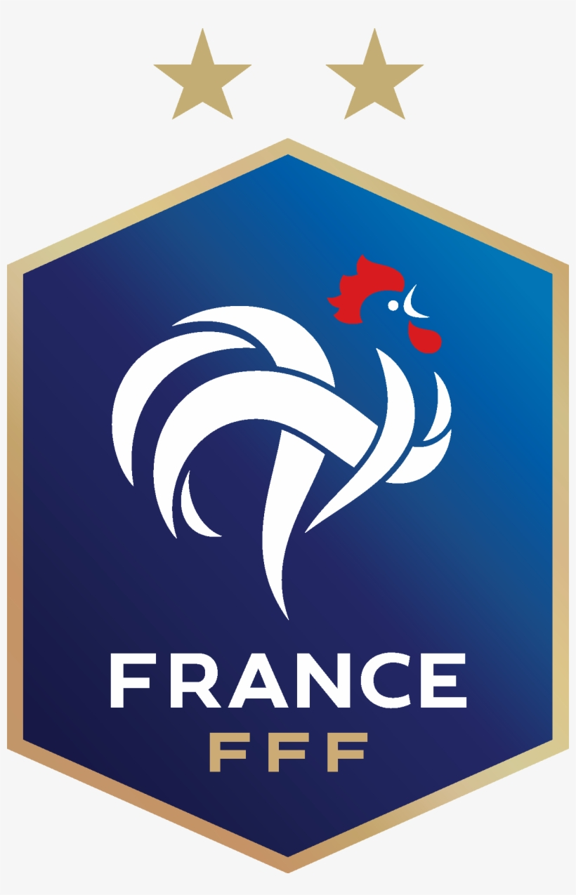
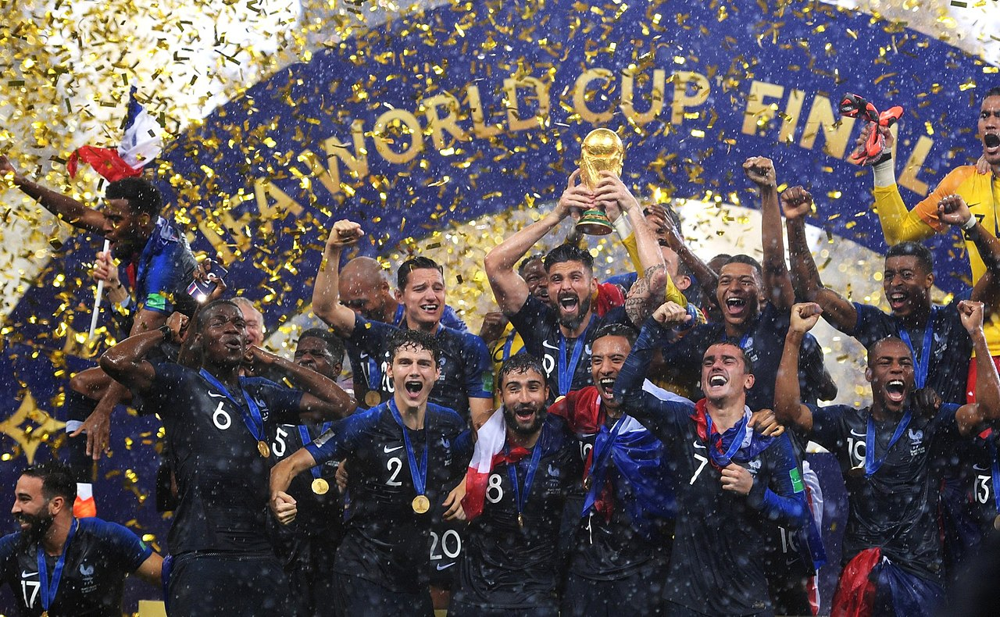
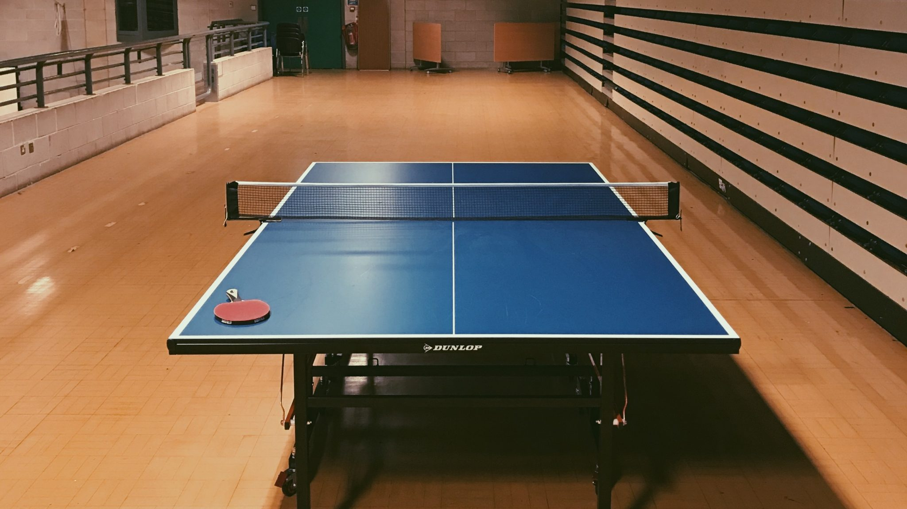

French Football Federation
The French Football Federation (FFF) (French: Fédération Française de Football) is the governing body of football in France. It also includes the overseas departments (Guadeloupe, French Guiana, Martinique, Mayotte and Réunion) and the overseas collectivities (New Caledonia, French Polynesia, Wallis and Futuna, Saint Pierre and Miquelon and Saint Barthélemy-Saint Martin) and also in Monaco. It was formed in 1919 and is based in the capital, Paris. The FFF was a founding member of FIFA and is responsible for overseeing all aspects of the game of football in France, both professional and amateur. The French Football Federation is a founding member of UEFA and joined FIFA in 1907 after replacing the USFSA, who were founding members
World Cup Champions 2018
Love Playing TT
Great Health Benefits of playing TT
Sigmund Freud says in Civilization and Its Discontents that man needs two things for happiness: “Love and work, work and love." Here’s what matters first about work: we're meant for it. Even the laziest person in the world simply can’t be lazy all of the time. If you find that hard to believe, try going on vacation for a month or two. There’s a reason that after a significantly long period away from work, we’re ready to come back. Why? Because we’ve pent up all of this productive energy and we’re hungry to put it to use. As humans, we’re in our most natural state when producing. Mihaly Csikszentmihalyi [“meh-hall-ee cheek-sent-me-hall-yee”] writes in his book, Flow, about a study conducted amongst professionals in which their flow experiences were compared in two major settings: work and leisure time. For those who haven’t read the book and/or aren’t familiar with this psychological term, “flow” is the term coined by Csikszentmihalyi to describe the state of optimal experience gained from complete immersion in one’s activity. Think of how you’re feeling whenever you’re doing your favorite thing (conversing with good friends, engaging in art, playing a game, etc.)—this is a time when you’re most commonly in flow. The necessary factors that must be present to achieve a flow state include the presence of some sort of challenge for which your skills are adequate, clear goals, and feedback. So back to the study. Csikszentmihalyi and his team gathered over a hundred working professionals during a weeklong period, equipping each of them with a pager that “beeped” at eight random points throughout the day and evening. At each randomly scheduled “beep,” the participant would write down what they were doing and how they felt at that very moment. The findings of the experiment can be best summed up by the following quote from Csikszentmihalyi. “What was unexpected [from this experiment] is how frequently people reported flow situations at work, and how rarely in leisure." How interesting. In other words, people found “optimal experience” more often at work, than at leisure. We’re conditioned to see unstructured leisure time as an escape, expecting it to be supremely satisfying. What Csikszentmihalyi reveals to us here, in one of the most profound books I’ve read to-date, is just how inaccurate that conditioning really is. While rest and relaxation are good and necessary, they often don’t involve the engagement and concentration that are required of a truly satisfying experience (aka, flow). I’d confidently argue that society would be better off if individuals achieved flow in their lives more often. While some may have an increased level of ambition when it comes to their career pursuits, it's a safe argument that we're each at our best when engaged in deep work. Now, to confidently agree with that statement, we have to understand what we mean by “work.” Some of you may have a humdrum, relatively mindless job that’s not conducive to frequent flow experiences. While that's valid and worth recognizing, it doesn’t negate the idea that work is our most natural state.